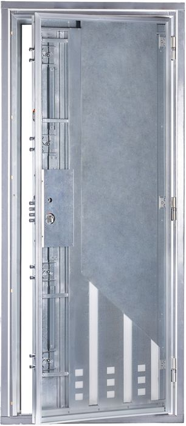
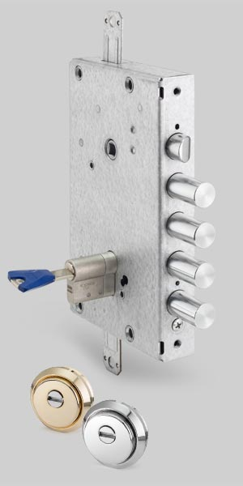
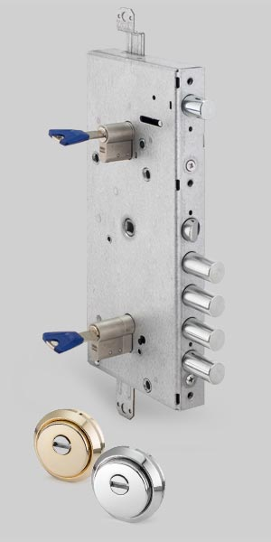
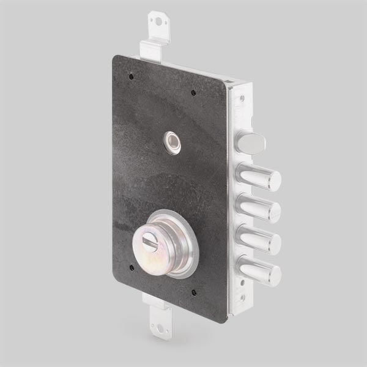
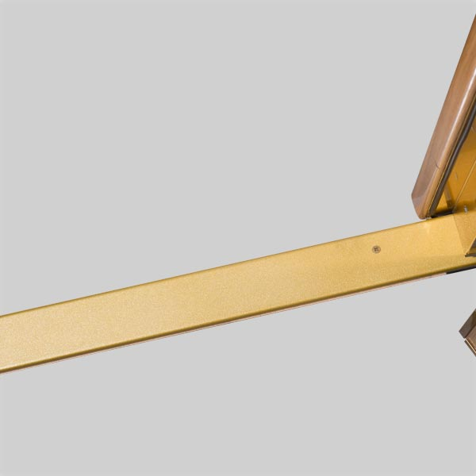
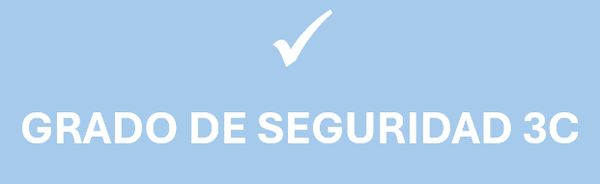

Premium 3C
Puerta acorazada grado 3C
La Premium 3C une el grado 3 europeo y la clase C española en una puerta fabricada en España. CABMA la presenta como la única puerta 3C del mercado.
- Grado 3
- UNE-EN 1627
- Clase C
- UNE 85160
- AENOR
- Producto certificado
¿Sabes las medidas de tu hueco? Te explicamos cómo tomarlas.


Así está hecha por dentro
Baja para desmontarla pieza a pieza.
DeslizaPremium 3C
La única puerta 3C del mercado: grado 3 según UNE-EN 1627 y clase C según UNE 85160.
Marco tubular galvanizado
Reforzado por dentro, con burlete incorporado, tapones en los anclajes y regulador de resbalón.
4 desviadores de dos bulones
8 puntos de cierre más, con bloqueo antirretroceso.
Tablero de roble
Tablero de madera de primera calidad.
Doble blindaje galvanizado
Chapa de acero galvanizado anticorrosión por fuera y por dentro, con aislante en el interior.
Cerradura grado 7 con bloqueo
Bulones de acero con antirretroceso. Como opción, cerradura de doble bombillo.
Refuerzos de acero
Omegas soldadas a la hoja de arriba abajo.
Chapa de manganeso
Cubre la cerradura, impide arrancar el escudo y la protege del taladro.
Escudo de acero F-522
De fabricación propia, con 62 HRC de dureza.
Bombillo KESO 8000 Master
El cilindro de alta seguridad que CABMA monta en la gama Premium.
3 bisagras de seguridad
De acero tratado, con rodamientos y regulables en 3D.
8 antipalancas
Refuerzan el lado de las bisagras para que la hoja no salga haciendo palanca.
Resistencia a precio justo
Pensada para quien quiere resistencia y homologación sin pagar una 4C o una 5C.
Características y opciones
Premium 3C es la puerta de seguridad más apropiada para clientes que valoran la resistencia,
la homologación y un precio justo.
Hemos unido el Grado 3 europeo de normativa UNE , EN 1627-2011, con la norma complementaria española 85160:2017, teniendo en cuenta que la obtención de estos dos grados son de año 2020, hace que los ensayos hayan sido mas exigentes, tal y como dice la norma.
- Marco tubular de chapa galvanizada, reforzada en su interior y con burlete incorporado.
- Refuerzo costilla fijación bisagras
- Burlete
- Refuerzos antipalancas
- Chapa galvanizada anticorrosión
- Patillas
- Aislante
Componentes

Calificada con un grado 7 y dotada con bloqueo de seguridad, se fabrica con bulones de acero y anti retroceso. Cerradura con bloqueo de seguridad 
Cerradura de doble bombillo con bloqueo de seguridad OPCIONALOpcional 
Chapa manganesoRecubrimiento indispensable de la cerradura, ya que impide arrancar el escudo y la protege de taladros 
EscudoFabricación propia de acero F-522 y 62 Rockwell (HRC) de dureza 
BombilloPara una puerta elaborada con tecnología innovadora hemos elegido el bombillo KESO 8000 master 
Bisagras3 bisagras de acero tratado, con rodamientos y regulables en 3D 
AntipalancasLas bisagras van acompañadas de 8 antipalancas para reforzar aún más un sistema de máxima seguridad 
4 desviadores de dos bulones cada uno (8 puntos de cierre adicionales) con sistema de bloqueo antirretroceso 
Regulador de resbalón 
TapaSe compone de una pletina estabilizadora
Perfil de aluminio y marco forrado en aluminio
Acabados
Cromado, dorado y negro.

Cromado 
Dorado 
Negro
Herramientas profesionales para ataques SIN ruido al sistema de cierre
Nivel A (medio)
 Magic key de borjas
Magic key de borjas Extractor
Extractor Mordaza de presión
Mordaza de presión Rompebombillos
Rompebombillos Imán neodimio
Imán neodimio
Herramientas profesionales para ataques CON ruido al sistema de cierre
Nivel B (alto)
 Radial
Radial Sierra de sable bimetal
Sierra de sable bimetal Taladro eléctrico
Taladro eléctrico
Nivel C (máximo)
 Amoladora recta
Amoladora recta
Medidas y otras características
MEDIDAS (Consultar medidas especiales)
| MARCO STANDARD | |
|---|---|
| MEDIDA TOTAL | PASO REAL |
| 206 x 89 cm. | 199 x 75 cm. |
| 209 x 91 cm. | 202 x 77 cm. |
| 209 x 95 cm. | 202 x 81 cm. |
Certificados
La seguridad de la Premium 3C está contrastada con ensayos normalizados en laboratorios externos acreditados. Pulsa en cada documento para verlo.


Otras puertas
Si quieres compararla, estas son las más cercanas. Compárala con ellas


Ven a verla en persona
En nuestra sede de Gijón te enseñamos las puertas CABMA y te asesoramos sin compromiso.
- Dónde estamos
- Camino de la Xacona, 40
33392 Gijón (Asturias) - Teléfono
- 985 053 052
 Pulsa para ver la ruta
Pulsa para ver la ruta